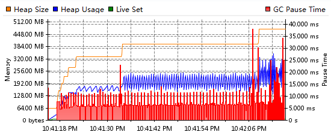
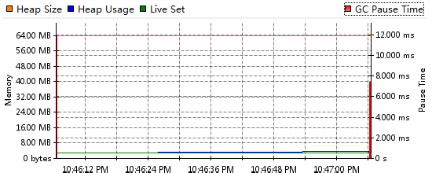

Java off-heap的一些参考
Sat, May 18, 2013读了Hazelcast的文档，很有意思的部分是”Elastic Memory”，为了减少GC，用到了java off-heap(off-heap允许Java直接操作内存空间, 类似于C的malloc和free)。之前孤陋寡闻，记录一些off-heap的参考。
.1.做了以下对比试验，来对比Heap和Non-heap
public class HeapAllocation {
public static void main(String[] args) {
while (true) {
Integer[] a = new Integer[1000000];
}
}
}
import java.lang.reflect.Field;
public class OffHeapAllocation {
private static Unsafe unsafe;
static {
try {
Field field = Unsafe.class.getDeclaredField("theUnsafe");
field.setAccessible(true);
unsafe = (Unsafe)field.get(null);
} catch(Exception e) {
}
}
public static void main(String[] args) {
while (true) {
long addr = unsafe.allocateMemory(8 * 1000000);
unsafe.freeMemory(addr);
}
}
}
Heap GC的测试结果： 
Off-heap GC的测试结果： 
尽管这种测试没啥意义，只能给个直观感受，还是可以看到Heap GC Pause Time还是很多的。
.2.这篇文章 对off-heap的性能做了全面的对比。
结论是heap access要快于off-heap，但off-heap在躲开GC pause和开大内存的时候明显优秀。
有趣的是在评论一楼Peter Lawrey指出JIT会影响这个测试，于是作者重做测试以证明JIT不影响结论。
.3.这篇文章 讨论了如何让Java避开GC并提供了memory的测试类GCUtils。
.4.在这里 Peter Lawrey谈到了如何测量一个Java对象的大小和TLAB对测量的影响。仅供参考。